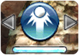

11 |
Reglas Básicas y Técnicas |
 |
● Paleta
● MULTI BALL
● EXTRA BALL
Moviendo rápidamente el
mando de Wii, puedes golpear la máquina para cambiar ligeramente la trayectoria de la bola. Puedes golpear en tres direcciones: adelante, a la derecha o a la izquierda. Sin embargo, si realizas mucho movimiento al hacer esto, el juego hará "TILT" y el jugador perderá por completo el control sobre la bola en juego hasta que salga del campo de juego.
ACTION BALL permite al jugador activar una acción especial con la bola pulsando

Bola Veloz
Hace que tu bola vaya más rápida, lo que causará más daño a los enemigos.  Bola Inversa
Bola InversaInvierte la dirección de tu bola.
Bola Dividida
Divide a tu bola en 2. La nueva bola desaparecerá tras cierto periodo de tiempo.
* Las ACTION BALL no pueden ser activadas a la vez. Es más una ACTION BALL sólo puede ser activada cuando la barra mostrada en el fondo de la pantalla está llena.
|
 |
 |
 |